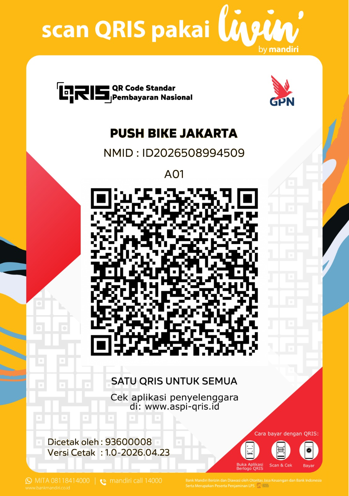

Scan QRIS
Bisa dibayar dari aplikasi apa pun yang berlogo QRIS — Livin' by Mandiri, BCA mobile, BRImo, GoPay, OVO, DANA, ShopeePay, dan lainnya.

Iuran latihan per kedatangan dan pembayaran lainnya kini bisa dilakukan secara non tunai — cukup scan QRIS resmi PBJ atau transfer ke rekening Pushbike Jakarta.
QRIS PBJ sudah diperbarui. Mohon bantuannya agar untuk setiap pembayaran menggunakan QRIS dan nomor rekening terbaru yang ada di halaman ini ya, Om/Tante. 🙏
Bisa dibayar dari aplikasi apa pun yang berlogo QRIS — Livin' by Mandiri, BCA mobile, BRImo, GoPay, OVO, DANA, ShopeePay, dan lainnya.

Kalau lebih nyaman transfer manual, gunakan rekening resmi Pushbike Jakarta di bawah ini.
Mohon kirimkan bukti pembayarannya supaya pembayaran Om/Tante langsung tercatat. Ada dua cara, pilih yang paling gampang:
Sudah jadi member? Bukti pembayaran boleh langsung dikirim ke grup WhatsApp Member PBJ Aktif.
Belum tergabung di grup, atau baru pertama kali ikut latihan? Kirimkan bukti pembayarannya ke admin:
Terima kasih banyak atas perhatian dan kerja samanya. 😊
Halaman ini adalah satu-satunya sumber resmi QRIS & rekening PBJ. Kalau menerima QRIS atau nomor rekening lain yang mengatasnamakan Pushbike Jakarta, mohon konfirmasi dulu ke admin.
{kind=link}